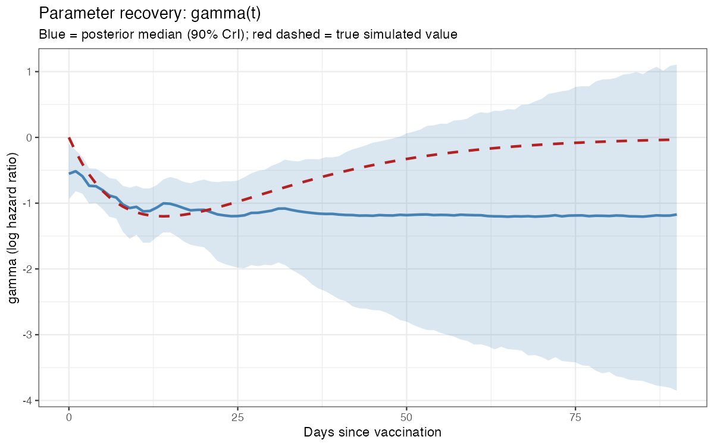
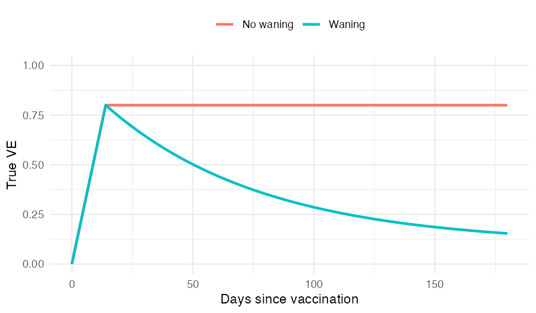
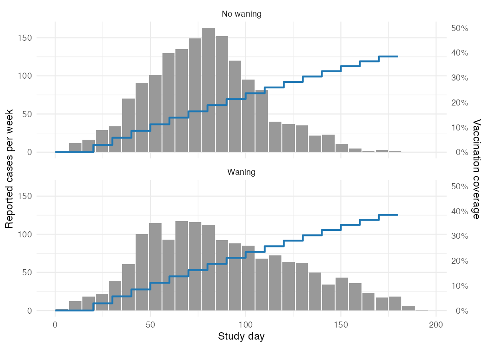
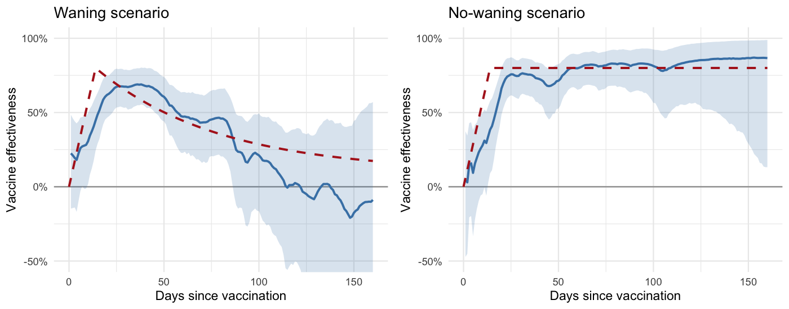
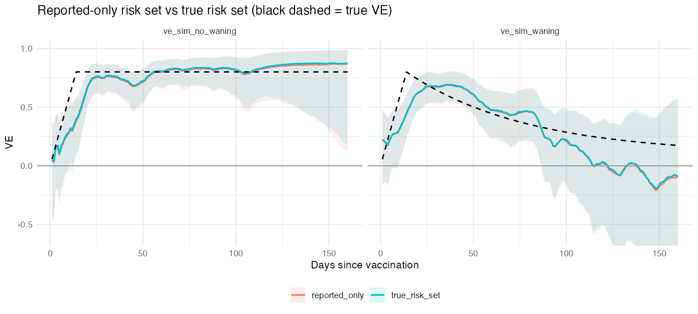
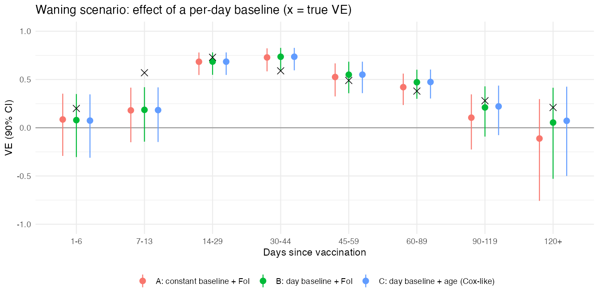
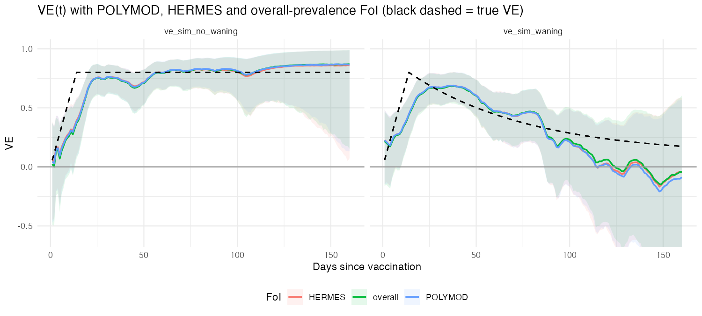
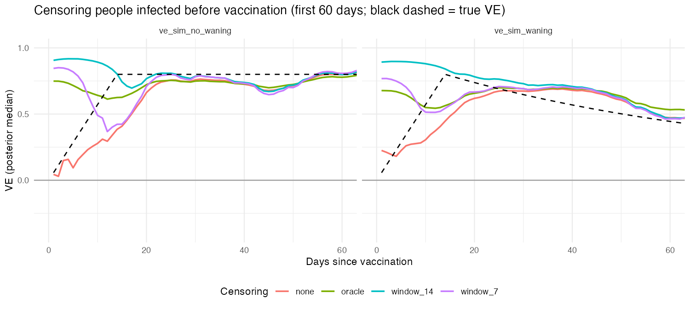

This notebook is the record of the project: how the method and the simulated test data were developed, and every check run on them. Results are written down as observed at the time and are not recomputed when the page is rebuilt. Later findings are added as new dated entries (or dated notes) rather than by editing earlier results.
Where an entry has a reproducing script, it is in
dev/checks/. Run scripts from the package root; outputs go
to $SURVIVER_CHECKS_OUT (default: a temporary folder).
Status and open questions
Last updated 2026-11-26.
| Question | Status | Entry |
|---|---|---|
Does fit_ve() recover a known VE(t)? |
Yes, broadly; 92–93% of days inside the 90% CrI | 7 |
| Why is the estimated curve about a week behind the truth? | Partly reporting time vs infection time (deferred to the planned delay extension). Much of the underestimate at days 7–29 is due to people infected before vaccination, which censoring fixes | 7, 12 |
| Why is late (90+ day) VE underestimated in the waning scenario? | About half explained by calendar time leaking into time since vaccination. Remainder within noise | 8, 9 |
| Do unreported (immune) infections in the risk set bias VE? | No detectable effect | 8 |
| Does the FoI offset improve precision? | Not in this simulation once calendar time is adjusted for | 9 |
| Does using HERMES’s true contact structure instead of POLYMOD change VE(t)? | No. It describes who gets infected much better, but VE estimates and their precision are unchanged | 10 |
| Does HERMES vaccinate people who were already infected, and does it matter? | Yes: about 12% of vaccinations go to recovered people, and 1% to infectious people. Decided 2026-11-26: keep HERMES as is (realistic) and censor in the analysis | 11, 12 |
| How should people infected before vaccination be censored? | They are 19% (waning) and 31% (no waning) of cases among vaccinated people, and cause most of the underestimate at days 7–29. Censoring anyone reported within 7 days of vaccination removes most of that bias using observed dates only. VE for days 1–7 is then not estimable | 12 |
| When should the FoI help? | Open: probably only when exposure differs between vaccinated and unvaccinated people (e.g. vaccination targeted by age). Needs a scenario that tests this | 10 |
| Is the remaining late bias real or chance? | Open: needs replicate simulations | — |
| Is a frailty term needed? | Open: decide after replicate simulations | — |
What value of theta (infectiousness of vaccinated
cases) should the case-study analysis use? |
Open: the workshop text said 0.5, its code used 1, the package default is 0 | 1, 6 |
| Should the HERMES reporting-seed bug be reported upstream? | Open: affects reproducibility of all HERMES case-study data | 4 |
Next steps
- Let transmission vary over calendar time in the Stan model (e.g. a
random walk on
log_betaby day or week), keeping the FoI offset. - Use
censor_at_vaccination = reported_soon_after_vaccination(pop, 7)in the standard analysis from now on (entry 12), and report VE from day 7 after vaccination. - Run 20–50 replicate HERMES simulations per scenario to measure bias and interval coverage, rather than judging from one realisation. Include the choice of censoring window.
- Simulate a scenario where vaccination is targeted (e.g. by age, oldest first), so vaccinated and unvaccinated people face different exposure, and test whether the FoI then improves bias or precision.
- Revisit frailty once (1) and (3) are done.
- Extend the method to account for the delay between infection and reporting.
See the handover notes for how to do each of these.
Timeline
| Date | Entry |
|---|---|
| 2026-06-16 to 19 | 1. Method developed at the Lorentz Center workshop (Group D) |
| 2026-09-10 | 2. HERMES extended with waning VE; first ground-truth datasets |
| 2026-11-25 | 3. Work consolidated into the surviver package |
| 2026-11-25 | 4. HERMES scenario made reproducible; data regenerated |
| 2026-11-25 | 5. The simulated datasets |
| 2026-11-25 | 6. Analysis code ported into the package |
| 2026-11-25 | 7. Recovery of VE(t) on simulated data |
| 2026-11-25 | 8. Unreported infections in the risk set |
| 2026-11-25 | 9. Calendar time and time since vaccination |
| 2026-11-25 | 10. FoI from the HERMES contact structure instead of POLYMOD |
| 2026-11-26 | 11. HERMES vaccinates infected and recovered people |
| 2026-11-26 | 12. Censoring people infected before vaccination |
1. 2026-06-16 to 19 — Method developed at the Lorentz Center workshop
Context. Group D (Fanny Bergström, David Price, Nathalie Dean, Hein Putter, Kylie Ainslie) at the Lorentz Center workshop Connecting Survival Analysis and Infectious Disease Modelling (Leiden, 15–19 June 2026). Aim: improve the efficiency of VE estimation by using the force of infection experienced by different subpopulations.
Data. The workshop case study: a simulation of
200,000 people generated by the organisers with HERMES, an
individual-based transmission model by Lander Willem (repository, user
manual), provided as demographic_data.rds,
vaccination_data.rds and
incidence_data_reduced.rds. The VE generating that data is
not known to participants.
Method developed (workshop repo, branch
group-D, analysis/group-D/):
-
data_wrangling.R: merge the data, sample a cohort of 10,000, daily incidence by age group and vaccination status, counting-process data split at vaccination, expansion to person-days, prevalence from reported cases (7-day infectious period starting 2 days before reporting). -
prepare_stan_data.R: age-structured FoI using the POLYMOD Netherlands contact matrix, plus an overall-prevalence version; person-days aggregated to cells. -
model.stan: Poisson approximation to a Cox model, , with a daily random walk on and . -
run_model.R: fits the age-structured and overall-prevalence versions. -
analysis_Poisson_and_Cox.R(Hein Putter, 2026-06-19): frequentist Poisson and Cox fits with piecewise-constant hazard ratios.
Check: parameter recovery with simulated outcomes
(simulate_validate.R, 2026-06-17). Event counts were
simulated from the model itself under a known
and a rise-then-wane
,
keeping the real covariate structure, then refitted.

Results recorded in the workshop vignette:
- recovered accurately (true −4.4, posterior median −4.40).
-
recovered well for about two weeks, then flattened with rapidly widening
uncertainty. This followed event sparsity in the vaccinated group
(events near zero by days 13–20), not a sampler failure. Earlier sampler
problems were fixed by a non-centred parameterisation
(
model_noncentered.stan). - On the case-study data, VE rose to about 88% by day 15, then appeared to plateau at 70–72% from day 45–90 (judged likely prior-driven), with an early dip to about −22% at days 2–3 (plausibly a reporting-delay effect).
Notes added 2026-11-25.
- The vignette states
(vaccinated cases half as infectious), but
prepare_stan_data.Rusedtheta <- 1(vaccinated cases not infectious at all). - The scripts hard-coded the study end (93 days in one place, 90 in another); see entry 6.
- The case-study VE is unknown, so these checks could only test the model against itself, not against a known truth. This motivated entry 2.
2. 2026-09-10 — HERMES extended with waning VE; first ground-truth datasets
Why. To validate the method against data where the true VE(t) is known, HERMES needed vaccine protection that changes with time since vaccination, and a scenario designed so that waning could in principle be detected.
Changes to HERMES (fork
kylieainslie/ibm_hermes; these changes were left
uncommitted until 2026-11-25, commit 24fc257 on branch
waning-vaccine-effectiveness):
-
compute_time_varying_ve()inlib/ibm_core.R: VE rises linearly from 0 to a peak overve_ramp_days, then decays exponentially with half-lifeve_half_lifetowardsve_floor. Applied to susceptibility only, in bothrun_ibm()andrerun_ibm(). - New defaults in
lib/ibm_parameters.R, with their basis:
| Parameter | Value | Basis |
|---|---|---|
vaccine_effectiveness (peak) |
0.8 | High end of measured influenza VE; optimistic, which makes waning easier to see (Ferdinands et al. 2018) |
ve_ramp_days |
14 | About two weeks for protective antibodies; VE studies start the “fully vaccinated” window at day 15 |
ve_half_life |
45 days | Exponential fit to Ferdinands et al.’s A(H3N2) estimates gives about 46 days; consistent with Chung et al. 2024 |
ve_floor |
0.1 | Assumption; little data beyond 180 days |
- Recalibrated, to be closer to seasonal influenza:
prob_hospitalfrom 0.3 to 0.0015 (calibrated by simulation to about 1.5% of symptomatic cases hospitalised), anddisease_mortality_ratefrom 0.01–0.7 to 0.00003–0.003 per day (verified by simulation at about 0.06% IFR under 60 and 0.5% over 60). - A check of other HERMES parameters against influenza literature found the mean incubation period (about 5 days) is 2.5–3 times longer than published estimates. Left unchanged.
- Side effect: these are package-wide defaults, so every HERMES scenario now has waning VE and lower hospitalisation and mortality unless the script overrides them.
Scenario design
(lib/ibm_waning_scenario.R): 10 initial infections and 20
days without vaccination, then 16 rounds of 10 days, each vaccinating 3%
of the remaining eligible population (seed
rng_seed + round).
Choice of transmission_prob. The
default (0.1) gives an epidemic that is over before most people are
vaccinated. A sweep without vaccination (10,000 people, 180 days):
transmission_prob |
Peak infectious | Peak day | Extinct by | Final attack rate |
|---|---|---|---|---|
| 0.035 | 1,603 | 41 | day 126 | 71.1% |
| 0.02 | 335 | 88 | not by day 180 | 32.4% |
| 0.015 | 46 | 63 | not by day 180 | 5.0% |
| 0.012 | 15 | 4 | day 73 | 0.3% |
| 0.01 | 14 | 6 | day 102 | 0.6% |
With 0.035, vaccinated cases bunched in the first 45 days after vaccination (79/63/60/38/12/9/2 cases in the 0–7/7–14/14–30/30–45/45–60/60–90/90+ day ranges). With 0.02 they spread across the full range (28/19/25/18/19/40/44), which is what’s needed to see waning. 0.02 was chosen.
Output. Two scenarios, waning
(ve_floor = 0.1) and no_waning
(ve_floor = 0.8), each 10,000 people, committed to the
workshop repo as data/ve_test_scenarios/ (commit
9f0d72d). The commit message reports a piecewise-Poisson
check, run outside any repository, that recovered the true curve well in
both. That check is not recorded anywhere and is superseded by entry 7.
Notes added 2026-11-25.
- The committed script and the HERMES vignette described a population of 100,000 and output paths that did not match the data. The data were in fact generated with 10,000 people (confirmed from the saved parameters).
- The reported-case files cannot be reproduced; see entry 4.
3. 2026-11-25 — Work consolidated into the surviver package
The work was spread across branches of two repositories (workshop
group-D and HERMES), plus uncommitted changes. It was
reorganised as:
| What | Where |
|---|---|
| Estimation code, datasets, vignettes, this notebook |
surviver R package (this repository), MIT licence |
| HERMES waning-VE code |
kylieainslie/ibm_hermes, branch
waning-vaccine-effectiveness
|
| Workshop record (original scripts, vignettes) |
kylieainslie/lorentz_center_workshop, branch
group-D, left in place |
The package’s data scripts load HERMES from a local clone
(HERMES_PATH) and record the HERMES commit in each dataset,
so HERMES can keep changing without a pull request upstream. The
workshop case-study data (200,000 people) is not included, as it belongs
to the workshop organisers. Both Stan models are kept:
ve_noncentered.stan (default) and
ve_centered.stan.
4. 2026-11-25 — HERMES scenario made reproducible; data regenerated
What was done (HERMES commit 6c9ab73).
The scenario script was turned into
simulate_waning_scenario(ve_floor, ...), whose defaults
match the September data, and export_waning_scenario().
Check: does it reproduce the committed data? Both
scenarios were rerun and compared with
data/ve_test_scenarios/:
- Population, vaccination data and saved parameters: identical.
- Reported cases: different (e.g. 1,588 vs 1,568 in the waning scenario), and different again on a second run (1,582).
Cause. obtain_incidence_data() calls
set.seed(delay_params$rng_seed), but
get_default_delay_parameters() has no
rng_seed, so it calls set.seed(NULL) and draws
a fresh seed every run. Infections and vaccinations are reproducible;
which cases are reported, and when, is not.
Fix. The scenario function sets
delay_params$rng_seed <- params$rng_seed. Two runs are
now identical. The September reported-case files cannot be recovered, so
the datasets were regenerated
(data-raw/ve_test_scenarios.R) and the package versions are
now the reference. They differ from the workshop copies only in the
reported-case table.
Implication. The same unseeded step probably affects
every HERMES dataset, including the workshop case study. A one-line fix
to get_default_delay_parameters() would solve it
upstream.
5. 2026-11-25 — The simulated datasets
ve_sim_waning and ve_sim_no_waning are the
reference test data for the method. Generated by
data-raw/ve_test_scenarios.R with HERMES commit
6c9ab73. Summaries below from
dev/checks/2026-11-25_00_simulated_data.R.
Design. Both use the same synthetic population and
settings; only ve_floor differs.
| Setting | Value |
|---|---|
| Population | 10,000 (0–4: 514; 5–17: 1,693; 18–49: 3,890; 50–64: 1,937; 65+: 1,966) |
| Transmission | Household, school, workplace and community contacts;
transmission_prob = 0.02; 10 initial infections |
| Study length | 180 days |
| Vaccination | None for days 1–20; then 16 rounds of 10 days, each vaccinating 3% of the remaining eligible population |
| Natural history | 80% of infections symptomatic; infectious for a mean of 7 days |
| Reporting | Symptomatic cases reported after a delay (Poisson, mean 2 days, maximum 6); 10% of symptomatic cases never reported |
| VE | Acts on susceptibility only. Ramps from 0 to 0.8 over 14 days; then
decays with half-life 45 days towards 0.1 (waning) or stays
at 0.8 (no_waning) |
| Random seed | 2026 (rounds use 2026 + round; reporting uses 2026) |

Contents.
| Waning | No waning | |
|---|---|---|
| Vaccinated | 3,842 (38.4%) | 3,846 (38.5%) |
| Reported cases | 1,566 (1,558 by day 180) | 1,559 |
| Ever infected by day 180 (incl. unreported) | 2,185 | 2,182 |
| Vaccinated people reported on or before their vaccination date | 326 | 372 |
| Peak week of reported cases | from day 63 (117 cases) | from day 77 (163 cases) |

Cases among vaccinated people, reported after vaccination and by day 180, by days since vaccination (the information available to estimate VE(t)):
| Days since vaccination | 0–6 | 7–13 | 14–29 | 30–44 | 45–59 | 60–89 | 90+ |
|---|---|---|---|---|---|---|---|
| Waning | 23 | 24 | 21 | 15 | 22 | 36 | 41 |
| No waning | 27 | 24 | 25 | 14 | 14 | 11 | 3 |
Things to be aware of.
- The two runs are not paired realisations of one epidemic: their epidemic curves differ from the first weeks, before VE could matter.
- HERMES vaccinates people who have already been infected, hence the 326/372 vaccinated people reported before vaccination.
- About 28% of infections are never reported (asymptomatic or missed). They are immune but look susceptible in the data.
- Reports can fall after day 180 (up to day 190 in the waning scenario).
-
general_mortality_rate = NULLswitches on HERMES’s background mortality, separate from disease deaths. Deaths are not in the exported data. - The scenarios are stylised, not a realistic influenza season (see the incubation-period note in entry 2).
6. 2026-11-25 — Analysis code ported into the package
The workshop scripts were rewritten as package functions
(ve_population(), daily_incidence(),
daily_prevalence(), counting_process(),
expand_person_days(), force_of_infection(),
make_stan_data(), fit_ve(),
extract_ve(), plot_ve(),
true_ve(), simulate_counts()), with unit
tests. Behaviour that differs from the workshop scripts:
| Change | Workshop scripts | Package | Why |
|---|---|---|---|
| Study end | Hard-coded 93 and 90 days | Taken from the data; cases reported later are censored | The simulated data run to 180 days and would have been silently cut |
| Infectious period | 8 days when duration_infection = 7
|
7 days | Off-by-one in the original sequence |
theta default |
1 (vaccinated cases not infectious) | 0 (as infectious as unvaccinated) | Matches HERMES, where VE acts on susceptibility only. The case-study value is still to be decided |
| Column naming | Columns renamed by position | Renamed by name | Positional renames break silently |
| Never vaccinated |
vax_status could be NA
|
0 | — |
| Speed | Nested loops | Vectorised; person-days for 10,000 people in about 1 s | — |
The POLYMOD matrix (polymod_nl) was checked to be
identical to the workshop’s contact_matrix_NL.rds.
7. 2026-11-25 — Recovery of VE(t) on simulated data
Question. Does fit_ve() (non-centred
random-walk model, default settings) recover the true VE(t) in the two
HERMES scenarios, and can it tell waning from no waning?
Data. ve_sim_waning and
ve_sim_no_waning (entry 5).
Method. Full population, age-structured FoI from
polymod_nl with theta = 0, infectious period 7
days starting 2 days before reporting, lag 1 day. Every day since
vaccination gets its own bin (160 bins). 4 chains, 1,000 warm-up + 1,000
sampling iterations, adapt_delta = 0.95, seed 42.
Script.
dev/checks/2026-11-25_01_recovery.R (about 1–2
minutes).
Results.
- Converged in both scenarios: max R-hat 1.004, min bulk ESS about 3,900, 1 divergent transition in 4,000 (waning) and none (no waning). 30–45 s per fit.
-
log_beta−4.51 (waning), −4.48 (no waning).sigma_gamma0.12 and 0.18. - True VE inside the 90% CrI on 93% (waning) and 92% (no waning) of days.
Average VE over each range of days since vaccination (true VE is averaged over the same days; e.g. 0.20 for days 1–6 is the mean of the ramp 0.06…0.34):
| Days since vaccination | Waning: true | Waning: estimate (90% CrI) | No waning: true | No waning: estimate (90% CrI) |
|---|---|---|---|---|
| 1–6 | 0.20 | 0.22 (−0.12, 0.45) | 0.20 | 0.11 (−0.31, 0.40) |
| 7–13 | 0.57 | 0.32 (0.05, 0.51) | 0.57 | 0.27 (−0.06, 0.49) |
| 14–29 | 0.73 | 0.61 (0.45, 0.74) | 0.80 | 0.64 (0.45, 0.78) |
| 30–44 | 0.59 | 0.68 (0.54, 0.80) | 0.80 | 0.74 (0.58, 0.84) |
| 45–59 | 0.49 | 0.57 (0.38, 0.71) | 0.80 | 0.74 (0.58, 0.85) |
| 60–89 | 0.38 | 0.43 (0.16, 0.62) | 0.80 | 0.82 (0.67, 0.91) |
| 90+ | 0.23 | 0.01 (−0.70, 0.44) | 0.80 | 0.84 (0.47, 0.96) |

Observations.
- The two scenarios are clearly distinguished: a rise then decline in the waning scenario, a plateau near 0.8 in the no-waning scenario. Unlike the workshop check (entry 1), the curve is informed by data well beyond two weeks, because these scenarios were designed to have vaccinated cases at long times since vaccination.
- The estimate lags the truth by about a week. Shifting the true curve right minimises the mean absolute error (days 1–120) at 6 days (waning) and 7–8 days (no waning). “Days since vaccination” is measured to the reporting day, while protection acts at infection, roughly 5 days (incubation) plus 2 days (reporting delay) earlier.
- In the waning scenario the estimate falls below the truth after about day 90 (to around 0 against a true 0.2), with wide intervals that still contain the truth.
Conclusion. The method works on this data. The lag is expected and will be handled by the planned extension for delays. The late underestimate needs explaining (entries 8 and 9).
8. 2026-11-25 — Do unreported infections in the risk set cause the late drop?
Question. About 28% of HERMES infections are never reported (20% asymptomatic, plus 10% of symptomatic cases missed). These people are immune but stay “at risk” in the data, mostly in the unvaccinated group. Does this explain the late underestimate in entry 7?
Method. Regenerate both scenarios with HERMES to
recover every person’s true time_of_infection (the
regenerated runs were checked to be identical to the packaged data).
Refit the entry 7 model twice per scenario:
- reported only: as in entry 7;
- true risk set: people infected but never reported are censored at their true infection time.
Events (reported cases at their report day), FoI and all settings are unchanged, so any difference is due only to the unreported infections.
Script.
dev/checks/2026-11-25_02_true_risk_set.R (needs a local
ibm_hermes clone; about 2–3 minutes).
Results.
- Unreported infections censored: 627 (waning; 570 unvaccinated and 57 vaccinated at infection) and 623 (no waning; 596 and 27).
- Estimates are essentially unchanged:
| Days since vaccination | True VE | Reported only | True risk set |
|---|---|---|---|
| 14–29 | 0.73 | 0.61 | 0.61 |
| 30–44 | 0.59 | 0.68 | 0.68 |
| 60–89 | 0.38 | 0.43 | 0.43 |
| 90–119 | 0.28 | 0.13 | 0.14 |
| 120+ | 0.20 | −0.08 | −0.07 |
(waning scenario; averages over each range of days)
- Mean error from day 90 on (estimate − truth): −0.22 vs −0.21 (waning); +0.04 vs +0.05 (no waning). Coverage 92–93% in all four fits.

Conclusion. Unreported infections are not the cause.
Removing about 600 people (roughly 10% of the remaining unvaccinated,
leaving gradually) barely changes the unvaccinated person-time, and the
overall level is absorbed by log_beta. A correction for
unreported infections is not a priority for VE(t).
9. 2026-11-25 — Is calendar time leaking into time since vaccination?
Question. Long times since vaccination are only observed late in the epidemic (you must have been vaccinated early). The model has one transmission level for the whole study and relies on the FoI offset to track calendar time. If the FoI fits poorly late in the epidemic, the leftover error lands on the late time-since-vaccination bins. Does adjusting for calendar day remove the late drop?
Method. Frequentist Poisson GLMs on the same cells as the Stan model, with one VE per range of days since vaccination (piecewise constant):
- A: one baseline + FoI offset (the Stan model’s structure);
- B: a separate baseline for each calendar day + FoI offset;
- C: a separate baseline for each calendar day + age group, no FoI (equivalent to a Cox model on calendar time).
Days with no cases at all are dropped for B and C, since they carry no information once each day has its own baseline. The true VE per range is the mean over vaccinated person-days.
Script.
dev/checks/2026-11-25_03_calendar_time.R (seconds; base
R).
Results (waning scenario, VE with 90% CI):
| Days since vaccination | Cases (vaccinated) | True VE | A | B | C |
|---|---|---|---|---|---|
| 1–6 | 23 | 0.20 | 0.09 (−0.29, 0.35) | 0.08 (−0.30, 0.35) | 0.07 (−0.31, 0.35) |
| 7–13 | 24 | 0.57 | 0.18 (−0.15, 0.42) | 0.19 (−0.14, 0.42) | 0.18 (−0.15, 0.42) |
| 14–29 | 21 | 0.73 | 0.68 (0.55, 0.78) | 0.69 (0.55, 0.78) | 0.68 (0.55, 0.78) |
| 30–44 | 15 | 0.59 | 0.73 (0.58, 0.82) | 0.74 (0.60, 0.83) | 0.74 (0.60, 0.83) |
| 45–59 | 22 | 0.49 | 0.53 (0.32, 0.67) | 0.55 (0.36, 0.68) | 0.55 (0.36, 0.68) |
| 60–89 | 36 | 0.38 | 0.42 (0.24, 0.56) | 0.47 (0.30, 0.60) | 0.47 (0.30, 0.60) |
| 90–119 | 28 | 0.28 | 0.10 (−0.23, 0.35) | 0.21 (−0.09, 0.43) | 0.22 (−0.08, 0.44) |
| 120+ | 13 | 0.21 | −0.11 (−0.76, 0.30) | 0.05 (−0.53, 0.41) | 0.07 (−0.50, 0.43) |
Case-weighted mean error from day 90 on: A −0.22, B −0.10, C −0.08 (waning); A 0.00, B +0.03, C +0.04 (no waning, where there are only 3 vaccinated cases at 90–119 days and none at 120+, so 120+ is not estimable).

Observations.
- Model A reproduces the Stan model’s late error (−0.22), so the piecewise GLM is a fair stand-in for this question.
- A per-day baseline roughly halves the late error. Earlier ranges barely change.
- The remaining error (about −0.1) is well inside the intervals (41 vaccinated cases after day 90); one realisation cannot separate it from chance.
- B and C give almost identical estimates and interval widths: once each day has its own baseline, the POLYMOD-based FoI adds nothing beyond an age effect here. This may reflect that POLYMOD contacts do not describe how HERMES transmits (households, schools, workplaces). Relevant to the project’s premise that FoI improves precision; worth revisiting with a FoI built from the simulation’s own contact structure.
Conclusion. Calendar-time confounding explains about half of the late underestimate. Next: add calendar-time flexibility to the Stan model, then judge any remaining bias, and the need for frailty, with replicate simulations.
10. 2026-11-25 — FoI from the HERMES contact structure instead of POLYMOD
Question. Entry 9 found that the POLYMOD-based FoI added nothing once calendar time was adjusted for, possibly because POLYMOD does not describe how HERMES transmits. Does building the FoI from HERMES’s own contact structure change the VE(t) estimates?
The HERMES contact matrix. HERMES has no contact
matrix as such. Each day an infectious person
gives every susceptible person
an infection probability of transmission_prob
,
with
(community)
if same household
if same school class
if same workplace. The new function contact_matrix_hermes()
averages
over age groups using the household, class and workplace IDs in the
data. It was checked to match a person-by-person calculation exactly and
to be reciprocal
().
Mean daily weighted contacts (row = person’s age group, column = contacts’ age group):
| 0–4 | 5–17 | 18–49 | 50–64 | 65+ | Total | POLYMOD total | |
|---|---|---|---|---|---|---|---|
| 0–4 | 5.42 | 0.91 | 2.91 | 0.77 | 0.79 | 10.8 | 11.9 |
| 5–17 | 0.28 | 10.42 | 2.85 | 0.83 | 0.79 | 15.2 | 20.7 |
| 18–49 | 0.38 | 1.24 | 3.29 | 1.14 | 0.81 | 6.9 | 15.4 |
| 50–64 | 0.21 | 0.73 | 2.29 | 1.67 | 0.88 | 5.8 | 11.6 |
| 65+ | 0.21 | 0.68 | 1.60 | 0.87 | 1.40 | 4.8 | 7.3 |
Compared with POLYMOD, HERMES contact is concentrated in school classes and households, and adults have far fewer contacts.
Method. For both scenarios, three FoI versions,
otherwise as in entries 7 and 9: POLYMOD,
HERMES (contact_matrix_hermes()), and
overall (total prevalence, no age structure). For
each:
- how well the FoI offset alone tracks infections in unvaccinated people (Poisson deviance of unvaccinated cells, with one baseline, and with an added age effect);
- the Stan recovery fit from entry 7;
- the piecewise GLMs A (one baseline) and B (per-day baseline) from entry 9.
Script.
dev/checks/2026-11-25_04_hermes_contacts.R (about 5
minutes).
Results.
1. Fit to unvaccinated infections (Poisson deviance, lower is better; the range shows how much an added age effect has to correct the FoI):
| Scenario | FoI | One baseline | With age effect | Age correction needed (rate ratios) |
|---|---|---|---|---|
| Waning | POLYMOD | 920 | 828 | 0.72–1.72 |
| Waning | HERMES | 858 | 836 | 0.89–1.22 |
| Waning | overall | 1,424 | 874 | 0.39–2.18 |
| No waning | POLYMOD | 821 | 758 | 0.62–1.23 |
| No waning | HERMES | 793 | 765 | 0.81–1.12 |
| No waning | overall | 1,324 | 813 | 0.31–1.60 |
2. Stan recovery:
| Scenario | FoI | Coverage (90% CrI) | Mean abs. error, days 1–120 | Error, days 14–89 | Error, days 90+ | Mean CrI width, days 1–90 |
|---|---|---|---|---|---|---|
| Waning | POLYMOD | 0.93 | 0.107 | +0.03 | −0.22 | 0.39 |
| Waning | HERMES | 0.93 | 0.107 | +0.03 | −0.20 | 0.39 |
| Waning | overall | 0.93 | 0.101 | +0.03 | −0.18 | 0.39 |
| No waning | POLYMOD | 0.93 | 0.069 | −0.05 | +0.04 | 0.32 |
| No waning | HERMES | 0.92 | 0.065 | −0.05 | +0.04 | 0.32 |
| No waning | overall | 0.90 | 0.072 | −0.05 | +0.04 | 0.33 |
All fits converged (max R-hat ≤ 1.004, at most 1 divergent transition).
3. Piecewise GLMs (waning scenario, case-weighted error from day 90): POLYMOD A −0.22, B −0.10; HERMES A −0.22, B −0.09; overall A −0.20, B −0.14. Standard errors of the log hazard ratios (days 14–89) were identical to three decimals across FoI versions (0.216–0.217 waning, 0.260–0.261 no waning).

Observations.
- The HERMES matrix is the better description of exposure: it fits unvaccinated infections best with a single baseline and needs the smallest age correction. POLYMOD over-weights adult contacts.
- VE(t) is essentially unaffected by which FoI is used, including no age structure at all: same coverage, error and interval width.
- The late underestimate is still there with the true contact structure, so it is not caused by POLYMOD being wrong about who mixes with whom. It is about the level of exposure over calendar time (entry 9).
Interpretation. VE is a comparison between vaccinated and unvaccinated people within the same age group and day. In these scenarios vaccination is random with respect to age and contacts (each round is a simple random sample of 3% of eligible people; coverage by day 180 is 35–40% in every age group), so vaccinated and unvaccinated people in a cell face the same exposure and the FoI cancels out of the comparison. Its age structure can then neither remove bias nor add precision. The FoI should matter when exposure differs between vaccinated and unvaccinated people, for example when vaccination is targeted by age or is related to contact behaviour. That is the situation the project premise is about, and these scenarios do not test it.
Conclusion. Use of POLYMOD is not what limits the method on these data. Added next step: simulate a targeted-vaccination scenario to test the FoI premise directly.
11. 2026-11-26 — HERMES vaccinates infected and recovered people
Context. While writing the handover notes, the HERMES vaccination code
(rerun_ibm() in lib/ibm_core.R) was read
closely. Each round vaccinates a random sample of everyone not already
vaccinated (V) or dead (D), which includes
people who are infectious (I) or recovered
(R). Vaccination sets their state to V. As a
result:
- recovered people lose their natural immunity and become susceptible again, protected only by the vaccine (which wanes in the waning scenario);
- infectious people stop being infectious immediately, since only
state
Itransmits.
Also on this day: simulate_waning_scenario() gained an
rng_seed argument (HERMES commit 8b11864) for
replicate simulations. The default (2026) reproduces the package
datasets exactly; seed 7 gives a different epidemic (1,156 reported
cases instead of 1,566).
Question. How often are infected or recovered people vaccinated, and how many cases among vaccinated people come from them?
Method. Regenerate both scenarios (checked identical to the packaged data) and, from the HERMES snapshot before each vaccination round, record each newly vaccinated person’s state.
Script.
dev/checks/2026-11-26_05_vaccinating_recovered.R (about 1
minute; needs a local ibm_hermes clone).
Results.
| Waning | No waning | |
|---|---|---|
| Vaccinated | 3,842 | 3,846 |
… while susceptible (S) |
3,356 | 3,316 |
… while recovered (R) |
442 (11.5%) | 491 (12.8%) |
… while infectious (I) |
44 | 39 |
| Recovered-then-vaccinated people infected again after vaccination | 13 | 11 |
| Cases among vaccinated people (reported after vaccination, by day 180) | 182 | 118 |
| … of which in recovered-then-vaccinated people | 12 (7%) | 15 (13%) |
Those 12 and 15 cases are a mix of genuine reinfections and original infections whose report fell after the vaccination date.
Interpretation.
- The simulated world differs from the usual assumption that infection gives lasting immunity: previously infected people who are vaccinated become susceptible again, so reinfections occur.
- The method counts the 12–15 cases above as vaccine failures. They are a modest share, but could contribute to the late underestimate in entry 7 and were not accounted for in entries 8–10.
- Vaccinating 39–44 infectious people cuts their infections short. This slightly reduces transmission and has no direct effect on the VE comparison.
- Real VE studies usually exclude or censor people with a known prior infection. An analysis could do the same for reported prior infections, but unreported ones (about 28% of infections) cannot be identified.
Conclusion. This is a feature of the simulator
rather than of the method. Options: (a) change HERMES so vaccination
does not override R (recovered people keep their immunity,
still recording time_of_vaccination), and optionally
exclude I; or (b) keep HERMES as is and censor people at a
reported infection before vaccination. Option (a) gives cleaner ground
truth but needs the datasets regenerating. Not yet decided.
Note added 2026-11-26: decided on option (b), because infectious and recovered people are vaccinated in real campaigns too. See entry 12.
12. 2026-11-26 — Censoring people infected before vaccination
Decision. HERMES stays as it is (entry 11): real
campaigns also vaccinate people who are infectious or already recovered,
so the analysis has to deal with them. People reported before
their vaccination date were already handled, because
counting_process() ends follow-up at the report. The
problem is people infected before vaccination but reported
after it, who are counted as vaccine failures.
What was added.
-
counting_process(censor_at_vaccination = ids): the listed people’s follow-up ends at their vaccination date, unvaccinated and without an event. -
reported_soon_after_vaccination(pop, window): an observable rule, listing vaccinated people reported 1 towindowdays after vaccination. An infection that happened before vaccination must be reported within roughly incubation (mean about 5 days) plus reporting delay (0–6 days).
Question. How many cases among vaccinated people were infected before vaccination, how much do they bias VE(t), and how well does an observable window rule work compared with knowing the truth?
Method. For both scenarios, four versions of the entry 7 analysis:
- none: no censoring (as before);
- oracle: censor people who were infectious or recovered when vaccinated (true state from the HERMES snapshots, as in entry 11);
- window 7 and window 14: censor anyone reported within 7 or 14 days after vaccination.
Each was fitted with the Stan model and with the per-day-baseline GLM (model B from entry 9).
Script.
dev/checks/2026-11-26_06_censor_prior_infection.R (about 10
minutes; needs a local ibm_hermes clone).
Results.
How many, and who each rule catches (among vaccinated people reported after vaccination and by day 180):
| Scenario | Cases among vaccinated | Infected before vaccination | Rule | Censored | … truly infected before | … genuine post-vaccination cases | Infected-before missed |
|---|---|---|---|---|---|---|---|
| Waning | 182 | 34 (19%) | oracle | 34 | 34 | 0 | 0 |
| window 7 | 25 | 21 | 4 | 13 | |||
| window 14 | 49 | 24 | 25 | 10 | |||
| No waning | 118 | 36 (31%) | oracle | 36 | 36 | 0 | 0 |
| window 7 | 31 | 25 | 6 | 11 | |||
| window 14 | 53 | 33 | 20 | 3 |
Stan: mean error (posterior median − true VE) by days since vaccination:
| Scenario | Rule | 1–6 | 7–13 | 14–29 | 30–44 | 45–59 | 60–89 | 90–119 | 120+ | Coverage |
|---|---|---|---|---|---|---|---|---|---|---|
| Waning | none | +0.02 | −0.25 | −0.11 | +0.09 | +0.08 | +0.05 | −0.14 | −0.28 | 0.93 |
| oracle | +0.47 | −0.00 | −0.07 | +0.10 | +0.11 | +0.08 | −0.10 | −0.23 | 0.88 | |
| window 7 | +0.55 | −0.02 | −0.07 | +0.10 | +0.08 | +0.05 | −0.14 | −0.27 | 0.92 | |
| window 14 | +0.70 | +0.31 | +0.05 | +0.12 | +0.09 | +0.05 | −0.14 | −0.27 | 0.91 | |
| No waning | none | −0.09 | −0.30 | −0.16 | −0.06 | −0.06 | +0.02 | +0.02 | +0.06 | 0.93 |
| oracle | +0.53 | +0.07 | −0.09 | −0.07 | −0.06 | −0.00 | −0.01 | +0.02 | 0.89 | |
| window 7 | +0.63 | −0.05 | −0.13 | −0.05 | −0.06 | +0.03 | +0.02 | +0.09 | 0.89 | |
| window 14 | +0.71 | +0.31 | −0.03 | −0.05 | −0.05 | +0.02 | +0.02 | +0.08 | 0.93 |
The per-day-baseline GLM agreed. After oracle censoring only 3 vaccinated cases remain at days 1–6 in each scenario; window 7 leaves none there, and window 14 none before day 14.

Observations.
- People infected before vaccination are a large share of cases among vaccinated people (19% and 31%), far more than the recovered people alone counted in entry 11 (12 and 15 cases): most were infectious when vaccinated.
- They cause most of the underestimate at days 7–29 that entry 7 attributed to the reporting lag. With oracle censoring, the error at days 7–13 falls from −0.25 to 0.00 (waning) and from −0.30 to +0.07 (no waning).
- Days 1–6 become unusable after censoring. Because time since vaccination is measured to the report date, someone infected after vaccination can hardly be reported within a few days. Once prior infections are removed, the first week has almost no cases and VE looks close to 1. In this period the curve reflects the prior on the first day, not data.
- Window 7 captures 62–69% of prior infections, wrongly censors only 4–6 genuine cases, and matches the oracle from day 7 onward. Window 14 catches more prior infections but throws away 20–25 genuine cases, empties days 7–13, and overstates VE there (+0.31).
- No rule changes the late (90+ day) underestimate, so prior infection is not its cause (consistent with entries 8–9).
Conclusion. Use
reported_soon_after_vaccination(pop, 7) with
counting_process(censor_at_vaccination = ) in the standard
analysis, and report VE from day 7 after vaccination. The best window
depends on the incubation and reporting-delay distributions, which in
real data would come from the literature or surveillance. Revisit once
the method handles delays (estimating time since vaccination at
infection rather than at report), which should make the first week
estimable again.
References
- Willem L. HERMES: Health, Epidemic and Economic R-based Microsimulation Engine for Individual-based Simulations. University of Antwerp. https://github.com/lwillem/ibm_hermes. User manual (extended version for the Lorentz Center workshop): https://github.com/lwillem/ibm_hermes/blob/lorentz_center_workshop/doc/user_manual_HERMES.pdf.
- Chung H, et al. (2024) Measuring waning protection from seasonal influenza vaccination during nine influenza seasons, Ontario, Canada. Euro Surveill 29(8):2300239.
- Ferdinands JM, et al. (2018) Duration of influenza vaccine effectiveness: a systematic review, meta-analysis, and meta-regression of test-negative design case-control studies. J Infect Dis 217(5):731–741. (Author attribution to be verified; possibly Young et al.)
- Mossong J, et al. (2008) Social contacts and mixing patterns relevant to the spread of infectious diseases. PLoS Med 5(3):e74.